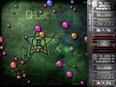
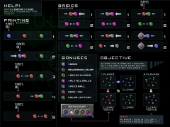

|
Q-Lat2 v2.2
(2001-2002)
 |
 |
Janne
Kivilahti
|
 Q-Lat2
v2.2
(ZIP) (3.4 MB) Q-Lat2
v2.2
(ZIP) (3.4 MB)
|
 |
 |
Q-Lat2
is an arcade type game mixing features from pentaque, billiards, and
flippers. The game objective in Q-Lat2 is to make all the balls
explode, by turning them all to the same color. This is achieved by
collisions between different colored balls, where the slower ball takes
the color of the faster ball. You control one of the balls (and your
friend controls another when 2 players play). Collect special bonuses
to increase your score or to gain more time. Not all bonuses are useful
though.
Q-Lat2 requires good aiming, fast reflexes, quick thinking, and a lot
of plain good luck :)
No blood and guns this time, just hectic hiscore hunting alone or with
a friend. |



|

|
 For 1-2 players For 1-2 players
6 themes with different friction
3 difficulty levels
Controls: mouse, keyboard and game pad
Collect bonus effects
4 original songs
|

|
 Windows 95, 98, 2000, XP (slow downs) Windows 95, 98, 2000, XP (slow downs)
DirectX 6 or above
6,4 MB hard disk space
|
 
|
 Q-Lat2 Forum Thread Q-Lat2 Forum Thread
|
|

|